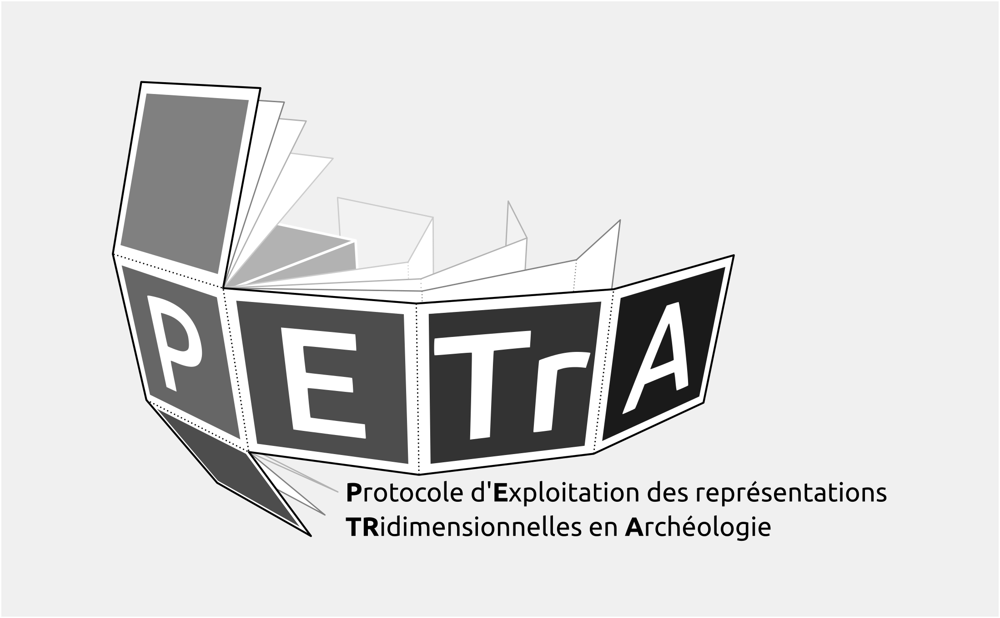

Situation initiale
Les modèles tridimensionnels sont aujourd'hui très utilisés pour documenter le patrimoine existant ou en cours de fouilles. Bien souvent, nous constatons qu'il est difficile d'exploiter les informations contenues dans les modèles 3D : elles sont toutes présentes, sous nos yeux, mais il est extrêmement difficile de les analyser facilement.
Le parti-pris que nous adoptons est celui d'extraire les informations une à une sous la forme d'un corpus d'images superposables afin d'établir une description géométrale de l'objet d'étude. Il est en effet bien plus facile de travailler en 2D plutôt qu'en 3D — de même que le traitement de texte (1D) est bien plus accessible que les outils de graphisme (2D). La réduction du modèle 3D en image 2D est menée selon les règles de représentation qui associent les vues en plan aux élévations, règles établies à Renaissance et qui permettent de comparer efficacement les objets d'études entre eux.
Solutions
Ces opérations sont facilités par la mise en place de protocoles appelés PETrA et ICEO.
- PETrA : Protocole d'Exploitation des représentations TRidimensionnelles en Archéologie
- ICEO : Images Compilées sous Eclairages Obliques
Ce sont deux protocoles complémentaires développés au sein du laboratoire d'archéologie (LARA) de l'Université de Nantes spécifiquement pour l'étude de l'art pariétal et la contextualisation des surfaces ornées au sein de leur architecture et / ou d'un paysage. Les mêmes procédures sont appliquées à divers objet (du mobilier archéologique au territoire) — l'utilisateur pouvant sélectionner les catégories d'information à rendre selon l'échelle de l'objet étudié.
PETrA s'emploie à convertir le modèle 3D en images 2D ; ICEO consiste plus spécifiquement à étudier les motifs en relief sur une surface.
Outils utilisés
Ces deux protocoles reposent autant que possible sur des logiciels libres et une documentation la plus exhaustive possible, et des données accessibles et diffusables. L'objectif poursuivi est ainsi de permettre la réplicabilité et un contrôle des résultats par nos pairs ou n'importe quel citoyen averti.
Les logiciels utilisés et leur configuration sont présentés dans un chapitre spécifique.
L'application des protocoles PETRA et ICEO est facilitée par l'utilisation d'une arborescence par projet prédéfinie et de fichiers gabarits (fichiers Blender, Inkscape, LibreOffice Calc). Cette arborescence peut être téléchargée sur le gitLab HumaNum : https://gitlab.huma-num.fr/vgrimaud/PETRA/-/blob/master/readme_FR.md
Fonctionnalités
Type de données analysables:
- modèles 3D surfaciques (*.obj, *.ply, etc.)
- modèles numériques de terrain (*.geoTiff)
- en perspective:
- des données issue d'acquisitions tomographiques
PETrA permet de :
- créer rapidement une documentation à partir d'un cube
- produire de multiples couches d'information comme :
- la couleur de l'objet, incluant la décorrélation d'image
- divers ombrages pour faciliter la lecture du volume
- les courbes de niveau
- les cartes des écarts pour anayler facilement des micro-variations
- la pointosité
- l'aspect de la surface (directement issue du monde du SIG)
- la pente (directement issue du monde du SIG)
ICEO permet de :
- produire des éclairages virtuels rasant...
- ... à partir d'une carte de relief (normal map)
- ... à partir d'une carte des écarts (bump map)
- en perspective :
- automatiser la détection des motifs en relief
Roadmap
V0.1:
- current state
V0.2:
- build startup file in Blender with a script
- framing cube, cameras
- materials
- compositing tree
V0.3:
- upgrade of the Render plugin
- generate paradata file
- automatic layout in Inkscape
V0.4:
- integration of the Distance map add-on, avoiding external computation
V0.5:
- access materials through an interface
- create categories of information to be rendered (associate a material to objects, choose object to render, etc.)

Tout le contenu est diffusé sous licence CC BY-NC-SA